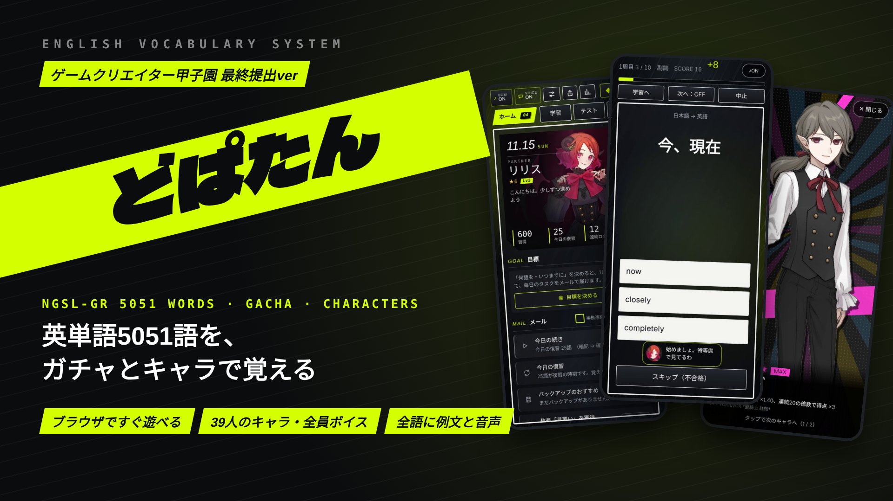
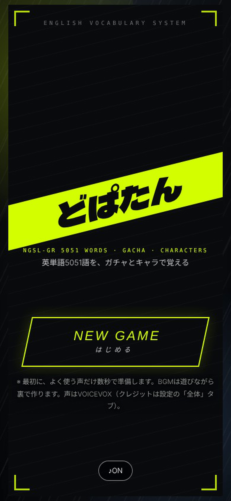
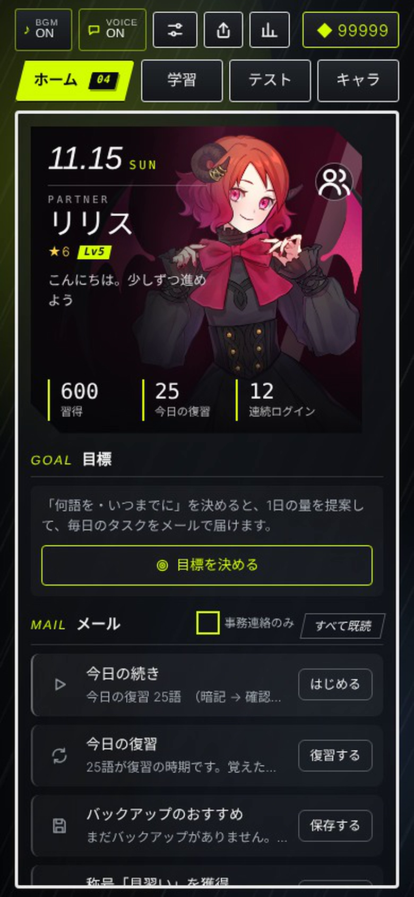
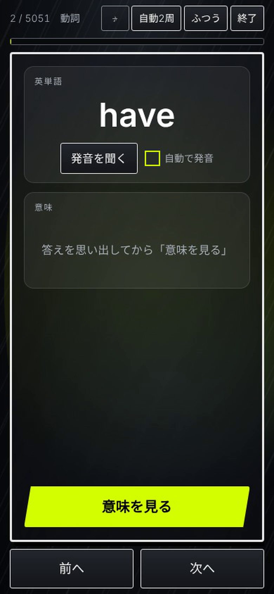
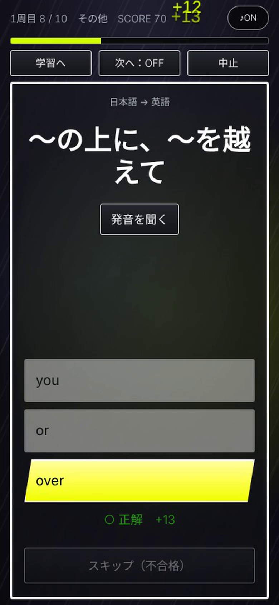
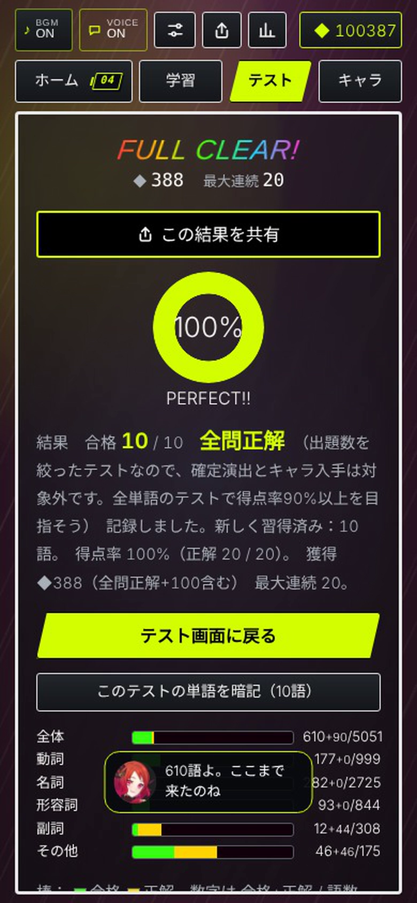
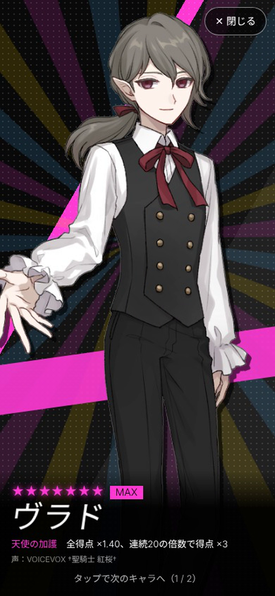
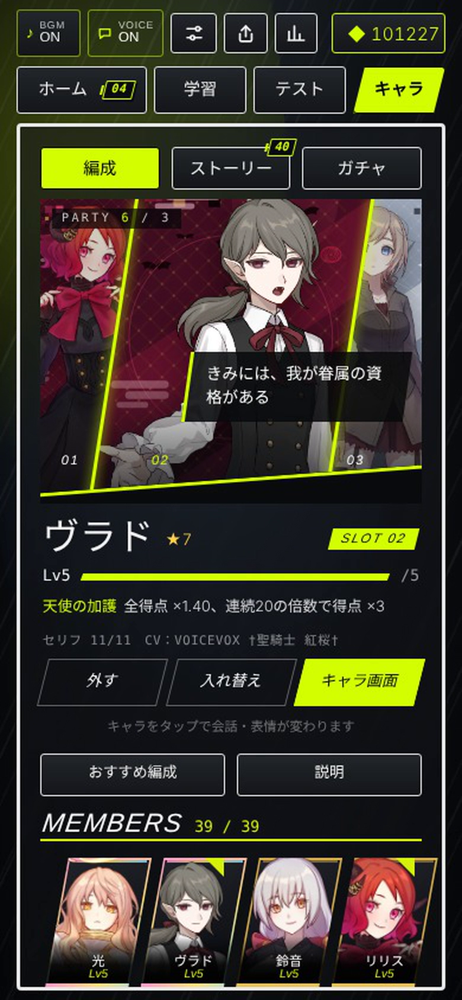
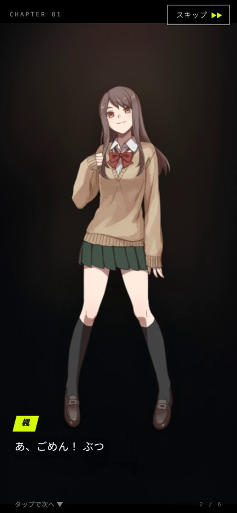

どぱたん 作品素材
ゲームクリエイター甲子園 最終提出ver（2026-11-15）
英単語5,051語を、テストとガチャとキャラクターで覚えるWebアプリです。
▶ ブラウザで遊ぶ https://room25-lang.github.io/dopatan/（スマホ推奨）
紹介動画（約1分30秒）
サムネイル

スクリーンショット
















前回の提出（ver 1.42・2026-11-13）からの変更点
| 単語 | 英単語を2,809語から5,051語に（NGSL＋NGSL-GR。全35ステージ）。追加分にも例文・和訳・英語音声 |
|---|---|
| キャラクター | 仲間を20人から39人に（追加19人）。立ち絵を元画像の画質に、表情つき |
| 声 | 全39人に声（自己紹介・タップのセリフ・スキル・ボス）。キャラごとの台本を書き直し、声の速さ・抑揚・高さをキャラごとに調整 |
| 相棒 | ホームに置いたキャラが相棒として、あいさつ・久しぶり・連続正解・目標達成などで話しかける（続けた日数で話し方が親しくなる） |
| ストーリー | 全39人の章とエピソード（195話）、男女のキャラが一緒に出るMAINストーリー（全8章）。ストーリーのセリフにも声。絆のレベルで話が開く |
| ガチャ | 4つのスカウト画面、ラインナップと確率（スキル適用後も）の表示、キャラが重ならない看板 |
| BGM | ホームBGMを4セット（シンセウェイヴ・ディープハウス・ローファイ・シティポップ、各3曲）。セリフ中はBGMを下げる、曲の切り替えで途切れない |
| 画面・操作 | 片手で答えやすいテスト画面、説明を表と図に、設定を「全体／音／画面／ヘルプ／データ／詳細」に整理、アクセントカラーを自由に選べる |
| 学習 | 単語の状態を「未習得／仮習得（リーチ）／習得済み」に。暗記の自動発音、正解時の得点表示 |
| データ | クラウド保存と引き継ぎコード、バックアップ、オフライン用の全データ保存 |
| 最終提出ver | チュートリアルのあと、全キャラ・全ストーリー・全機能を最初から解放（◆30000つき）。BGMと掛け声はアップテンポな「ノリノリ」 |
| 修正 | 声の割れ・遅れ・重なり、長いセリフが途中で切れる、キャラ画面の表示、読み間違い（キャラ名など）ほか多数 |
ダウンロード
アプリ一式（dopatan_GCK2026_final.zip）のSHA-256：01b389a3d970baba8d9970f7d050ee2dcf734b83d54f47c6ab20dd4680668bbb
クレジット
音声：VOICEVOX（ナレーション 冥鳴ひまり、各キャラクターの声はアプリ内のクレジットに記載）／立ち絵：わたおきば／単語：NGSL・NGSL-GR／英語音声：Kokoro
制作：25号室